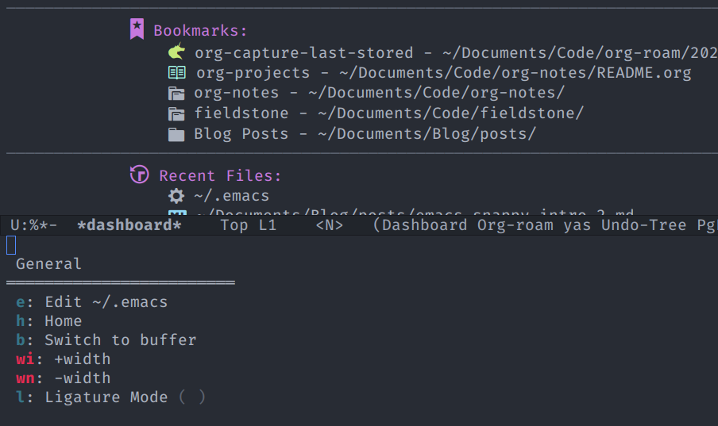

Ent's snappy guide to Hydra
Hydra
Bunch of commands or shortcuts that should only be available when you want them
Quick reminder of what these shortcuts do
Colours - Red => Execute and keep posframe open - Blue => Execute & close posframe - Amaranth => Keep posframe open but if unknown key press, warn. - Teal => Warn on unknown keypress & close posframe after execution - Pink => Keep posframe open but on unknown key press, try to run via non-hydra mode(?)
How to think about colours:
What do you want to do after execution? What do you want to do on wrong key press?
Major Mode Hydra
Wouldn't it be nice if we enable a subset of hydras based on current mode?
This avoids crowding or using different key binding to bring up different hydras.
Can be defined in two ways
- major-mode-hydra-define => Override absolute
- major-mode-hydra-define+ => append to existing or create new
- Toggle a mode/var along with visual cue
- <...>-mode => :toggle t
-
Call Hydra
- Via evil-define-key
- global-set-key
Example
- General
- To init.el
- To dashboard
- Buffer Switch
- Window resizing
-
ligature-mode
-
Markdown mode
- magit
Introduction
In the previous post, we looked at how to create an Emacs setup from scratch with little to no programming effort. We set up some important defaults to make the system inviting.
In this post I am going to talk about Hydra, with which you can create your custom keybindings/shortcuts easily and never worry about forgetting them!
Let us say that you have a bunch of emacs commands you call often and would prefer them to be faster to get to. Imagine that following is the list of those commands along with shortcut to call them:
-
General
- To init.el =>
e - To dashboard =>
h - Buffer Switch =>
b - Window resizing =>
wi,wn - ligature-mode =>
l
- To init.el =>
-
Markdown mode
- magit status =>
gs - magit commit =>
gc
- magit status =>
-
General (in Markdown mode)
- Info Lookup =>
inf
- Info Lookup =>
